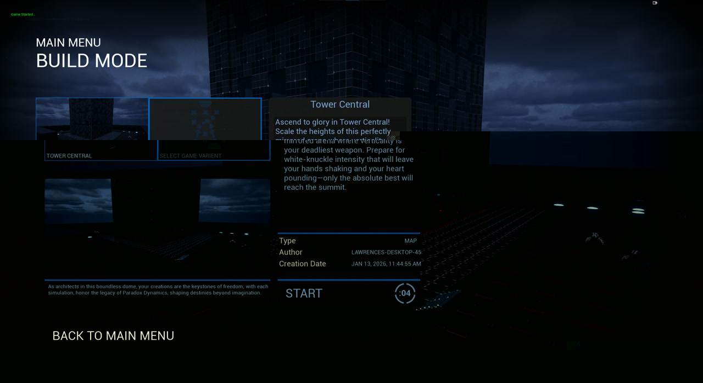
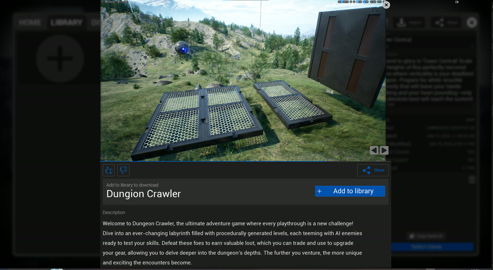
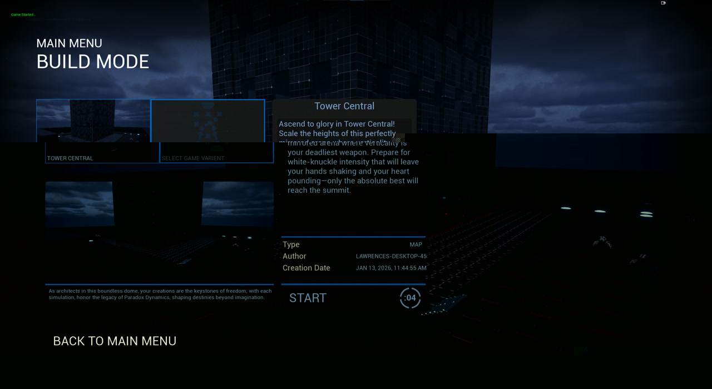
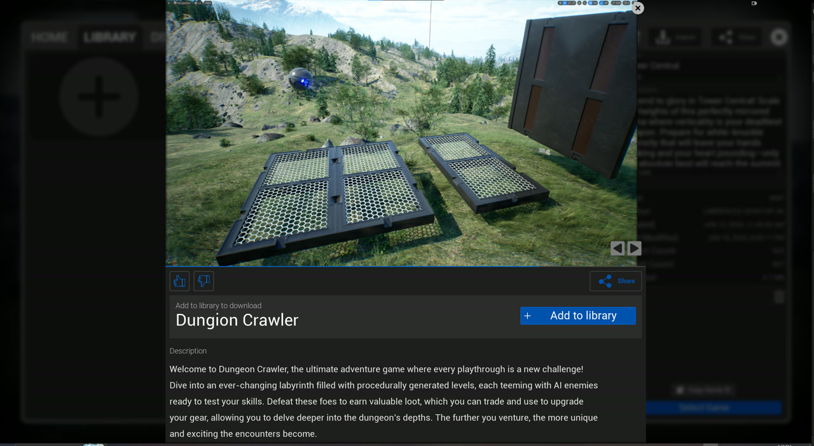

1. Character Systems
Goal: Create a responsive "True First Person" controller supporting Sliding and Mantling.
I extended the standard UCharacterMovementComponent to include custom movement modes.
Using a strict Enum State Machine prevented invalid transitions (e.g., sliding while airborne).
Above: Overview of movement mechanics and debug view showing capsule trace logic for mantling.
2. UI Architecture
Goal: Decouple UI Widgets from data storage to ensure settings persist across levels.
I implemented a custom C++ GameInstance Subsystem. The UI widgets act strictly as "Views," querying the Subsystem ("Model") for data. This MVVM-style approach cleaned up the Blueprint graphs significantly.
 



3. Material Design & HLSL
Goal: Create performant, grid-based world materials and HLSL UI effects.
I utilized a master material workflow to instantiate world grids efficiently. For the UI, I wrote custom HLSL shaders for damage feedback effects, ensuring they were lightweight on the GPU.
4. AI Design
Goal: Tactical enemy behavior using Behavior Trees and EQS.
The AI utilizes a Behavior Tree with a custom Service for Line-of-Sight checking. I used the Environment Query System (EQS) to allow the AI to find optimal range positions relative to the player.
5. Interaction Systems
Goal: A generic, decoupled interaction system for all world objects.
I created a BPI_Interact interface. The player character sends an interface message
to the actor under the crosshair. This removes the need to Cast To specific actor types,
preventing hard reference chains and reducing load times.